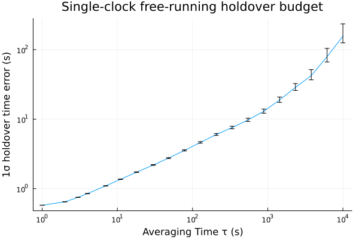

Tutorial: Single-clock holdover prediction
When a clock disconnects from its reference, what is the predicted 1σ time-error budget at any holdover horizon τ?
1. Frame the problem
A clock under steering tracks a reference — GPS, a maser, a coordinated time scale — by continuously pulling its frequency back toward the reference's pace. When the reference is lost, the steering loop has nothing to lock to and the clock free-runs: it "holds over". From that moment on, the clock's time accumulates error against the would-be reference at a rate set entirely by the clock's own intrinsic stability.
The 1σ time-error budget at a holdover horizon τ is bounded by the clock's time deviation σ_x(τ). TDEV is a σ_x quantity (units of seconds), defined as σ_x(τ) = (τ/√3) · MDEV(τ), so the curve TDEV vs τ is the holdover budget across all horizons simultaneously — one estimator evaluated on a record of free-running phase residuals delivers a budget read-out at every τ in the record's support range Riley & Howe 2008.
2. Synthesize a Cs-like phase residual
A commercial caesium-beam clock is dominated by white-FM noise (WHFM, α = 0) at short averaging times and by random-walk-FM (RWFM, α = −2) at long averaging times. We synthesize a 100 000-sample phase record at τ₀ = 1 s by summing two independent power-law components — a primary WHFM contribution plus a small RWFM contribution that takes over as τ grows:
using FFTW
using Random
using SigmaTau
using SigmaTau.Stab: _gen_powerlaw_phase
Random.seed!(42)
N = 100_000
tau0 = 1.0
x_whfm = _gen_powerlaw_phase(0, N; tau0=tau0)
x_rwfm = _gen_powerlaw_phase(-2, N; tau0=tau0)
x = x_whfm .+ 1e-4 .* x_rwfm
data = PhaseData(x, tau0)The using FFTW line supplies the concrete FFT backend that _gen_powerlaw_phase needs — the synthesizer is AbstractFFTs-based and resolves to FFTW once FFTW is loaded.
3. Compute TDEV across all horizons
Choose log-spaced averaging factors covering τ ∈ [1, 10⁴] s and call tdev with calc_ci=true so the result carries χ² confidence bounds and the noise-type identification used to derive them:
m_values = unique(round.(Int, exp10.(range(0, 4, length=20))))
result = tdev(data, m_values; calc_ci=true)
result.deviation_type, length(result.tau), length(result.dev)(:tdev, 20, 20)The returned StabilityResult carries
tau— averaging times τ = m·τ₀ (s),dev— TDEV value σ_x(τ) (s),noise_type— per-τ identified noise (e.g.:wfm,:rwfm),ci_lower,ci_upper— χ² confidence bounds (s),edf— equivalent degrees of freedom from Greenhall & Riley 2003.
4. Interpret
For any horizon τ, the 1σ holdover time-error budget under free-running operation is σ_x(τ): with probability ≈ 0.683 the clock's accumulated time error remains within ±σ_x(τ) at horizon τ. The TDEV curve below is this budget across every horizon in the record's support range.
A useful read-out: pick three horizons (100 s, 1 000 s, 10 000 s) and inspect the values together with the dominant noise type at each:
function readout(result, target_tau)
i = argmin(abs.(result.tau .- target_tau))
(; tau = result.tau[i], dev = result.dev[i],
noise = isempty(result.noise_type) ? :unknown : result.noise_type[i])
end
readout(result, 100.0), readout(result, 1_000.0), readout(result, 10_000.0)((tau = 78.0, dev = 3.5533642499310916, noise = :WHFM), (tau = 886.0, dev = 12.98629541913508, noise = :FLFM), (tau = 10000.0, dev = 156.42888166735705, noise = :RWFM))The slope of σ_x(τ) reflects the dominant noise process: under WHFM the TDEV slope is +1/2, under RWFM it is +3/2. The transition between the two appears in the curve as a steepening at long τ.
5. Plot
The package ships a Plots recipe for StabilityResult, so a single plot(result) call renders a log-log holdover curve with χ² error bars. We override the default y-axis label to make the holdover framing explicit:
using Plots
plot(result;
ylabel = "1σ holdover time error (s)",
title = "Single-clock free-running holdover budget",
legend = false)
6. See also
The same τ-vs-error curve can be derived from the state-space side: propagate a ThreeStateClock covariance forward by τ via P(τ) = Φ(τ) · P₀ · Φ(τ)' + Q(τ) and read 1σ time error off the top-left entry of P(τ). SigmaTau's predict! advances a state estimate one step under the chosen clock model; iterating over horizons gives the same holdover budget without ever drawing a noise realization. A worked end-to-end ensemble example is deferred to a future tutorials/three_clock_ensemble.md.